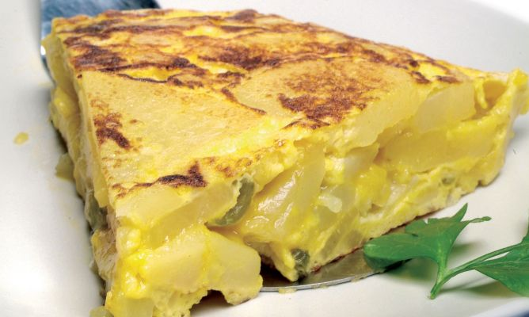

Tortilla de patata y cebolla

Ingredientes
- 6 huevos
- 1 cebolla pequeña
- 2 vasos de aceite de oliva
- 1 hoja de perejil
- 3 patatas
- 1 pimiento verde
Elaboración (Pasos)
- Pela y pica la cebolla en dados medianos. Limpia el pimiento verde, retírale el tallo y las pepitas y córtalo en dados. Si las patatas estuvieran sucias, pásalas por agua. Pélalas, córtalas por la mitad a lo largo y después corta cada trozo en medias lunas finas de 1/2 centímetros.
- Introduce todo en la sartén, sazona a tu gusto y fríe a fuego suave durante 25-30 minutos.
- Retira la fritada y escúrrela. Pasa el aceite a un recipiente y resérvalo. Limpia la sartén con papel absorbente de cocina.
- Casca los huevos, colócalos en un recipiente grande y bátelos. Sálalos a tu gusto, agrega la fritada de patatas, cebolla y pimiento y mezcla bien
- Coloca la sartén nuevamente en el fuego, agrega un chorrito del aceite reservado y agrega la mezcla. Remueve un poco con una cuchara de madera y espera (20 segundos) a que empiece a cuajarse.
- Separa los bordes, cubre la sartén con un plato de mayor diámetro que la sartén y dale la vuelta. Échala de nuevo para que cuaje por el otro lado.
- Freirla al gusto por los dos lado, servir y ¡Qué aproveche!
Para volver atrás pulsa aquí